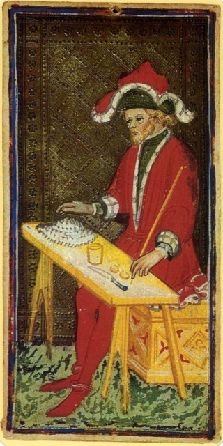
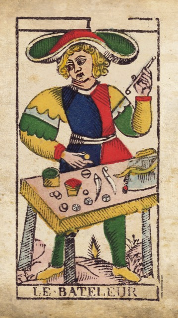
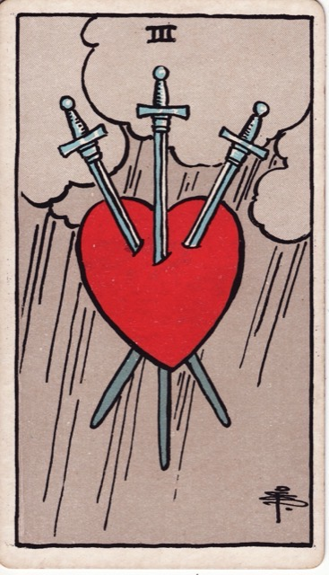

Lesson 01 · Tarot
Where Tarot Comes From
Your deck is three different objects stacked on top of each other, made three centuries apart. Learn to see the seams and you will never have to memorise a card meaning again — you will be able to derive it.
By the end of this page you can hand your deck to a friend, point at any card, and explain which of three historical layers put each element there — and which parts are documented history versus 18th-century invention.
Here is the whole story in one sentence, and you should distrust it until you have read the rest: tarot was invented in Italy in the 1440s to play a card game, acquired fortune-telling meanings in Paris in the 1780s, and got the pictures you are looking at in London in 1909.
Three layers. Nothing about the cards makes sense until you can tell them apart, because most tarot books blend all three into a single voice of ancient authority — and that voice is the least reliable thing about the subject.
Layer 1 · A card game for Italian nobles
Four-suited playing cards arrived in Europe from the Islamic world in the 1370s. About seventy years later, someone in a northern Italian court had a good idea: add a fifth suit of picture cards that beats all the others. They called them trionfi — "triumphs" — which is where the English word trump comes from.
That is the entire origin of the Major Arcana. The 22 trumps are a trump sequence in a trick-taking game, and their numbers exist for one reason: so players can tell which one wins. Trump XV beats trump XII. That is what the numerals on your cards were for.
The earliest known written record is from 1440, in the diary of a Florentine notary, Giusto Giusti, who records commissioning a pack of trionfi painted with a nobleman's crest. Court account books from Ferrara in 1442 record payments for carte da trionfi. These are ledgers and diaries — mundane paperwork, which is exactly what makes them good evidence. Trionfi.com research archive · Pratesi's archival work
The people playing it were not seeking wisdom. They were playing cards. And the game did not die out — descendants of it are still played competitively across Europe today: Tarocchini in Bologna, Königrufen in Austria, French Tarot in France. Those players do not read fortunes with the deck any more than a bridge player reads fortunes with the ace of spades.
So where did the imagery come from? Ordinary late-medieval visual culture, mostly: the cardinal virtues, the estates of society, Petrarch's Triumphs, the Dance of Death, the Wheel of Fortune. A 15th-century Italian looking at these cards would have recognised almost every figure the way you recognise a traffic sign.
Layer 2 · A Paris antiquarian makes something up
For roughly 340 years, across thousands of surviving documents, decks, and card-game rulebooks, there is no record of anyone using tarot to tell fortunes. Then, in 1781, a French Protestant pastor and amateur antiquarian named Antoine Court de Gébelin encountered the game at a friend's house and had a revelation.
In volume VIII of his Le Monde primitif, he announced that the cards were the surviving pages of an Egyptian Book of Thoth — priestly wisdom disguised as a card game so it could escape the burning of the Library of Alexandria.
Court de Gébelin produced no evidence whatsoever for this. He could not have: hieroglyphs were undeciphered until Champollion in 1822, four decades later. He was looking at a French printed card deck of recent manufacture and describing ancient Egypt from imagination. Nearly every "ancient wisdom" claim made about tarot since then descends from this passage. The claim in context
It was a spectacular success. Within two years, a Parisian fortune-teller writing under the name Etteilla — Jean-Baptiste Alliette, his surname reversed — published the first method for reading tarot, and later the first deck designed for divination rather than play. Professional tarot reading, as an occupation, starts there.
The system then got much more elaborate. In 1855, Éliphas Lévi welded the 22 trumps onto the 22 letters of the Hebrew alphabet and the Kabbalistic Tree of Life. His argument, stripped of decoration, is that both sets happen to number 22. He assigned Aleph, the first letter, to the Magician — remember that, it comes back in a moment.
Then in 1888 the Hermetic Order of the Golden Dawn was founded in London, and systematised the whole thing: an element and an astrological ruler for every card, the trumps mapped onto paths of the Tree of Life. If you have ever read that Cups are the suit of water and emotion, you are reading the Golden Dawn syllabus. It is not ancient. It is Victorian, and it is younger than the telephone.
Layer 3 · London, 1909 — the pictures
Two Golden Dawn members made the deck in your hands. Arthur Edward Waite directed the symbolism; Pamela Colman Smith, an artist and theatre designer, drew all 78 cards between April and October 1909. William Rider & Son published it that December.



Look at what changed. The 15th-century figure is a street performer — a bagatella, a trifle, a man doing cup-and-ball tricks at a fair, and the weakest trump in the game. By 1909 he is a robed adept channelling divine force, wearing Lévi's Aleph and the Golden Dawn's Mercury. Waite told Smith what props to add and she added them.
Smith's real innovation, and why you can read the deck at all
Here is the change that matters most, and it is not on the trumps. Before 1909, the 40 numbered suit cards were pip cards — geometric arrangements of suit signs, with no scene at all. The three of swords in a Marseille deck is three swords in a pattern, exactly as informative as the 3♠ in a poker deck.

Smith gave all 56 suit cards a narrative scene. That single decision is why a beginner can pick up an RWS deck and start reading immediately, and it is why almost every tarot deck published since copies her compositions. When you feel the three of swords means heartbreak, you are not tapping ancient wisdom — you are correctly reading a picture an English artist drew in 1909 to convey exactly that.
Waite also quietly swapped two trumps, moving Strength to VIII and Justice to XI to fit a Golden Dawn astrological sequence. For 460 years before him they were the other way round. If you ever see a deck that numbers them the old way, that is not an error — it is Waite's change being declined.
One more thing, because it deserves saying. Smith was paid a flat fee of about £50 and no royalties for drawing the most reproduced deck in history. She died in poverty in Cornwall in 1951, and her name was not on the box. Modern practice calls it the Rider–Waite–Smith deck for that reason, and this workspace will too. More on Smith
The payoff: how to say why a card means something
This is the engine for everything else you will learn. Take the Magician and split it by layer:
| Layer | What it contributes |
|---|---|
| Game 1440s | Trump I. A fairground conjuror — skilled, entertaining, and possibly cheating you. The weakest trump on the table. |
| Occult 1781–1888 | Recast as the Magus: directed will, the adept who commands rather than performs. Lévi's Aleph; the Golden Dawn's Mercury. |
| Waite–Smith 1909 | The lemniscate for unbounded force. One hand raised, one lowered — "as above, so below." All four suit emblems on his altar: he has every tool available. |
Now watch what this buys you. If a friend asks what the Magician means, the weak answer is "focused will and manifestation" — repeated from a book. The strong answer:
"He has every tool on the table and one hand pointing up, one down — that is a picture of someone able to bring an intention into the world. Which is what Waite meant by it in 1909. But the older version of this card is a fairground trickster, the lowest trump in the deck — so there is a second reading right there in the lineage: someone very skilled at appearing to have power. Given what you asked me about, which of those sounds more like your situation?"
That is a reading with reasons. It cites the image, it names the tradition, it holds two possibilities honestly instead of pronouncing, and it hands the interpretation back to the person who actually has the context. That is the target for this whole course.
Do this now · with your deck
Three minutes, cards in hand. This is the part that makes it stick.
- Split the deck into 22 and 56. Pull out every card with a roman numeral and a title. That pile is the fifth suit somebody bolted on in the 1440s. The other 56 are an ordinary four-suit pack — the part tarot shares with the deck you play poker with.
- Lay the 22 out in order, I to XXI. Notice the Fool carries 0 rather than a numeral. In the original game he was not a trump at all — he was the "excuse," a card you could play instead of following suit. His oddness is a rules artifact, not a mystery.
- Find Strength and Justice. Check their numbers: VIII and XI. You are looking at Waite's 1909 edit.
- Pull the three of swords. Hold it and remember that before Smith, this card was three blades in a pattern. Everything you can read off it, she put there.
- Hunt for her signature. In a lower corner of most cards there is a tiny monogram — a P, C and S interlocked in a small square. Once you have found it on one card you will see it everywhere. It is the only credit she got.
- Pull the Magician. Find all four things from the table above: the lemniscate, the two hands, the four suit emblems, the roses and lilies. Say the three-layer reading out loud once. Out loud matters — it is the difference between recognising the idea and being able to produce it.
Check yourself
One attempt per question, no scrolling back up. Getting one wrong is more useful than getting it right by peeking.
Where and when was tarot invented?
- Milan and Ferrara, 1440s
- Alexandria and Thebes, 1400s BC
- Paris and Marseille, 1780s
Northern Italian courts in the 1440s — evidenced by a Florentine notary's diary of 1440 and Ferrara court accounts of 1442. The Egyptian answer is Court de Gébelin's 1781 fabrication; the Paris answer is when divination was attached, three centuries after the cards existed.
What were the 22 trump cards originally for?
- Winning tricks in a game
- Telling fortunes for a fee
- Hiding wisdom from the church
They were a fifth suit that beat the other four, and the numerals exist so players can see which trump wins. Fortune-telling arrives in the 1780s; the hidden-wisdom story is the 1781 Egyptian myth in a different costume.
Court de Gébelin's Egyptian origin claim rested on what evidence?
- Nothing but his own conjecture
- Hieroglyphic texts found in Turin
- Temple carvings recorded at Luxor
None at all. He was looking at a recently printed French card deck. Hieroglyphs could not even be read until Champollion in 1822, forty-one years later — so no one in 1781 could have sourced a claim like this from Egyptian text.
What did Pamela Colman Smith add that made the deck readable?
- Scenes on all suit cards
- Numbers on all suit cards
- Hebrew on all suit cards
She illustrated all 56 suit cards with narrative scenes. Before 1909 the 40 number cards were bare pips — arrangements of suit signs with nothing to interpret. This is the single reason a beginner can read an RWS deck without a lookup table.
Roughly how long was tarot used with no recorded divination?
- About three hundred forty years
- About one hundred twenty years
- About five hundred sixty years
1440 to 1781 is 341 years of decks, rulebooks and account books with no fortune-telling recorded anywhere. Michael Dummett's archival work established this, and it is the single most load-bearing fact in tarot history.
Now put the timeline in order
Click the events earliest to latest. The years are hidden until you place each one correctly — so you have to actually reconstruct the sequence, not read it off.
- A Florentine notary records commissioning trionfi cards
- Bembo paints the Visconti-Sforza deck in Milan
- Court de Gébelin declares the cards Egyptian
- Etteilla publishes the first method for reading
- Lévi maps the trumps onto Hebrew letters
- The Hermetic Order of the Golden Dawn is founded
- Rider publishes the Waite–Smith deck
Read this before the next lesson
A. E. Waite, The Pictorial Key to the Tarot (1911) — free and complete. This is the companion book to the exact deck you own, written by the man who told Smith what to draw. Read the preface and then his entry for the Magician.
Two things to watch for. First, Waite is openly contemptuous of fortune-tellers even while publishing a fortune-telling deck — he thought the cards held philosophical truth and that divination was vulgar. Second, notice how much he refuses to explain, hinting at Golden Dawn material he was oath-bound not to publish. The evasiveness is itself evidence about layer 2: he is guarding a system that was twenty years old, not four thousand.
I am your teacher here — ask me things. Anything that felt thin, any claim you want the source for, anything in the images you noticed and I did not mention. Some good ones to throw at me:
“Why does the Fool get 0 instead of a numeral?” · “If the trumps are just game cards, why those 22 subjects?” · “Show me a card where the three layers actually conflict.” · “Is any of the Egyptian story salvageable?” · “What does Waite say the Magician means, and does it match what Smith drew?”